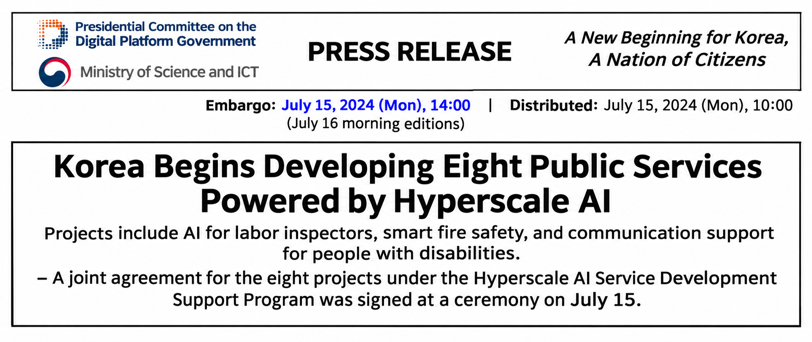
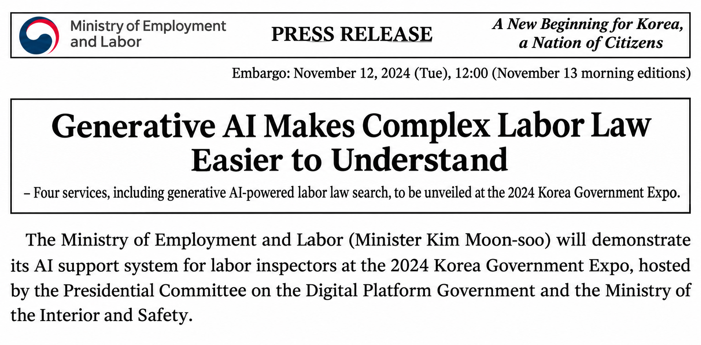

He Didn’t Give Up
Park turned to partners outside the Ministry to keep the project going.
-
Won development support
Park and maum.ai won a place in a government hyperscale AI programme with more than 10 proposals per spot.

-
Unveiled four AI services
At the Korea Government Expo, the team introduced four services, including an AI-powered labor law search tool.

-
Partnered with labor attorneys
The Ministry signed an agreement with the Korea Certified Public Labor Attorneys Association to verify AI-generated answers.
Outside recognition began to change how the Ministry saw the project.